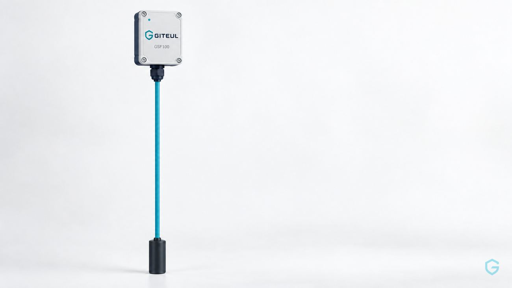
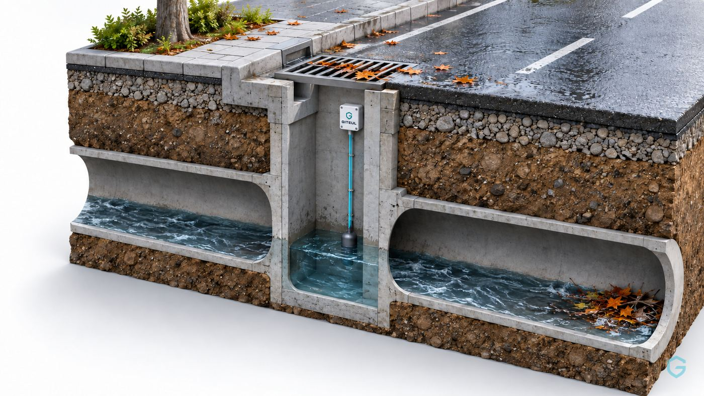

하천 · 인접 저지대
하천 수위와 저지대 추세를 함께 봅니다.
Platform · Architecture
'물이 닿았다'는 신호만으로는 어디가 위험한지, 물이 계속 차오르는지, 누가 움직여야 하는지 알기 어렵습니다. GITEUL은 현장의 변화를 계속 읽고, 판단과 대응까지 하나로 잇습니다.
LTE Cat.1 장치별 인증서 암호화 통신 원격 펌웨어 업데이트

IoT 단말기(GSF100)
Control & App
화면 예시
Sites
하천 수위와 저지대 추세를 함께 봅니다.

막힘 · 역류 징후를 수위 변화로 살핍니다.
유입 경로의 변화를 담당자에게 알립니다.
관리사무소의 확인과 진입 관리를 돕습니다.
운영기관의 통제 판단을 앞당깁니다.
먼저 살펴볼 교차로를 함께 판단합니다.
Company
GITEUL은 AI, 통신, 임베디드 기술을 통합해 재난안전 인프라를 설계 · 제조하는 기술 기업입니다. IoT 단말부터 서버 · 관제 웹 · 모바일 앱까지 모두 자체 개발해 구축부터 유지보수까지 책임지는 단일 파트너 구조를 지향합니다.
제품 문의, 파일럿 도입, 기술 제휴 관련 문의는 아래 상담 요청으로 편하게 남겨주세요.
Pilot
기술로 안전한 내일의 기틀을 만듭니다.
FOUNDATION FOR SAFETY,
CONNECTED FOR TOMORROW